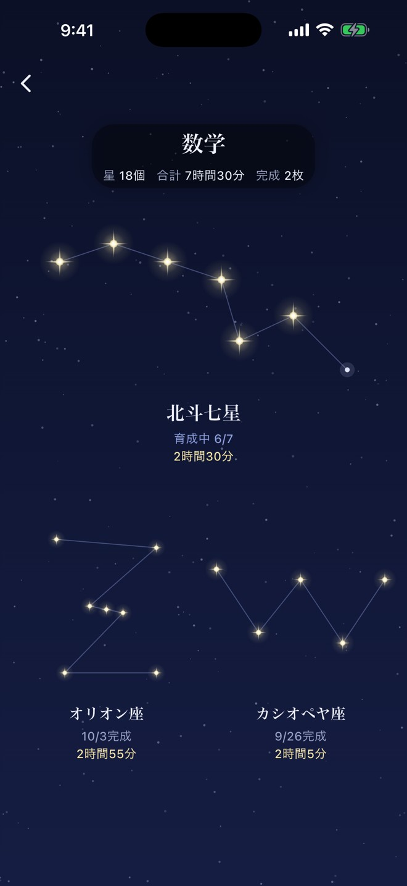
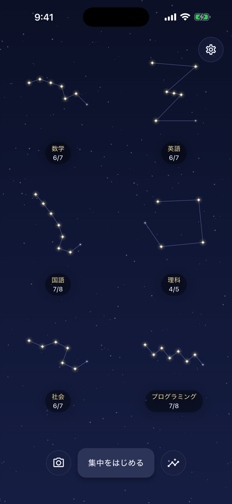
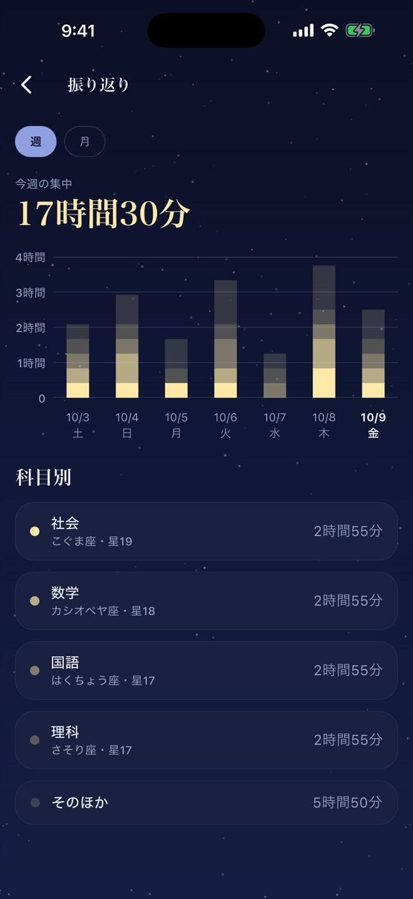

好きな長さで、すぐ集中
15・25・45・60分からワンタップ。1〜180分の自由設定もできる。
25分でも、90分でも、好きな長さで。集中を1回終えるたび、星がひとつ灯る。科目ごとの星座が育ち、気づけばそこに、自分だけの夜空ができている。レポートも、受験勉強も、毎日の自習も、終えた時間がそのまま残る集中タイマーです。


集中した時間を、グラフの数字だけで終わらせない。Starlitは、1回の集中を1つの星にして、科目ごとの星座へ育てる。星が集まれば星座になり、星座が増えれば、あなただけの夜空になる。
長く集中できた日も、短い時間しか取れなかった日も、記録は残る。数字を追うのではなく、夜空を見上げるように、今日の自分を振り返れる。そんな勉強の記録の形です。
科目を決めて、時間を選んで、集中する。たったそれだけで、夜空は少しずつ広がっていく。
数学、英語、レポート、資格勉強。科目を追加すると、その科目のための星座がひとつ生まれる。科目ごとに、別の星座が育っていく。
15・25・45・60分からワンタップ。1〜180分のあいだで、自分に合う長さを自由に決めてもいい。集中の長さは、その日の自分で選べる。
集中を終えるたび、星がひとつ灯る。星を重ねて星座が完成したら、次は新しい星座へ。次に何が来るかは、始めてからのお楽しみ。
途中でやめた回は「流れ星」。星は灯らないけれど、集中した時間は振り返りに残る。次の集中で、また灯せばいい。
無料の「深い藍夜」の空でも、集中タイマー・通常36星座・振り返り・夜空のシェアが使える。まずは、いつもの夜空からはじめてみて。
科目ごとに、ひとつの星座を育てる。星を重ねて完成させると、次の星座へ進む。通常36星座を順番にめぐる。
星座図鑑と試験日カウントダウンは、次のアップデートで登場予定です。
直近1週間と5週間の集中時間をグラフで確認。科目別の内訳も見られる。

15・25・45・60分からワンタップ。1〜180分の自由設定もできる。
一時停止しているあいだは時間に数えない。戻ってきたら、続きから。
別のアプリに切り替えても、タイマーは続く。終了時刻には通知でお知らせ（通知を許可した場合）。通知がなくても、タイマーと記録は使える。
次のアップデートで、夜空を着替えて、限定の星座を育てる Starlit+ が登場します。今日はどの空で集中しよう。そんな小さな楽しみが、勉強の夜に増える。
登場予定
暁、オーロラ、雪の夜、月夜、天の川、夜桜、蛍の夜。気分や季節に合わせて選べるようになります。
えんぴつ座、ねこ座、ふくろう座など。これから始まる星座に、通常の星座と交互に加わる予定です。
年額・月額・買い切り。どれを選んでも、使える内容は同じ予定です。
タイマー・通常36星座・振り返り・シェアは、Starlit+ がなくても使える。
価格と提供時期は、公開時にアプリ内の購入画面でお知らせします。
アカウント登録は不要。科目名も、集中履歴も、端末の中に保存される。広告は表示しないし、他社アプリやWebサイトをまたぐ追跡もしない。
ログインも、メールアドレスもいらない。
科目名、集中履歴、設定は端末に保存。運営者のサーバーへ保存する仕組みはない。
広告SDKを組み込んでいない。広告IDも使わない。
他社アプリ・Webサイトをまたぐ追跡はしない。
アプリの改善のため、氏名やメールアドレスとは結びつけない形で、利用状況（集中の開始・完了、予定時間・実行時間、星が灯ったか、画面の表示、購入画面の表示、購入・復元の結果、共有の操作など）を PostHog に送ります。購入の管理のため、購入情報を RevenueCat に送ります。科目名、試験の名前・日付、氏名、メールアドレス、広告識別子は送りません。端末の故障・紛失、アプリの削除で記録が失われることがあります。詳しくはプライバシーポリシーをご確認ください。
無料の「深い藍夜」でも、タイマー、通常36星座、振り返り、夜空のシェアが使えます。星座図鑑と試験日カウントダウンは、次のアップデートで登場予定です。
星座は順番にめぐります。次にどの星座が来るかは、始めてからのお楽しみです。
その回は流れ星になり、星は灯りません。集中した時間は振り返りに残ります。
画面をロックしても、別のアプリに切り替えても、タイマーは続きます。通知を許可していれば、終了時刻にお知らせします。
科目名、集中履歴、設定は端末内です。アカウント登録も、運営者サーバーへのバックアップもありません。端末の故障・紛失、アプリの削除で失われることがあります。
次のアップデートで登場予定です。提供時期と価格は、公開時にアプリ内の購入画面でお知らせします。
iPhoneの「設定」→ Apple Account →「サブスクリプション」から。期間が終わる24時間前までに解約しない限り、自動で更新されます。
特別な準備はいらない。科目を決めて、時間を選んで、集中するだけ。終わったとき、星がひとつ灯っている。その星から、あなたの夜空が始まる。
App Storeでダウンロード